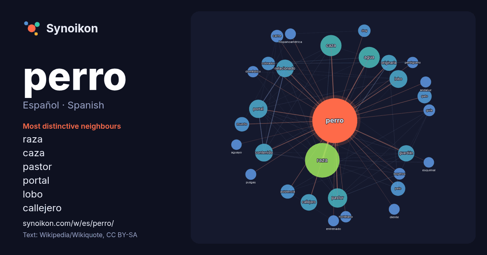

Español · Spanish · popular word
perro
“dog” · The words found around it in 1658 instances from Spanish Wikipedia, Wikiquote.

Most distinctive neighbours
- raza 60×
- caza 40×
- pastor 36×
- portal 34×
- lobo 31×
- callejero 30×
- relacionado 29×
- guardián 29×
- contenido 25×
- originaria 25×
- pelo 22×
- cobrador 21×
- gato 20×
- asistencia 19×
- dog 17×
- boyeros 16×
- muerto 15×
- perdiguero 15×
- hortelano 15×
- carne 15×
× = how many times more often than in general Spanish Wikipedia text.
Most frequent neighbours
- raza 131
- agua 49
- caza 49
- pastor 41
- portal 37
- contenido 35
- lobo 35
- relacionado 34
- nombre 31
- callejero 30
- conocido 30
- tipo 30
- guardián 29
- originaria 28
- película 28
- españa 23
- muerto 23
- pelo 23
- asistencia 22
- gato 22
In context
- El perro (Canis familiaris o Canis lupus familiaris, dependiendo de si se lo considera una especie o una subespecie del lobo), llamado perro doméstico Wikipedia snippets · Canis familiaris
- principales: perro perdiguero o de cobro, perro de aguas y perro pointer o de muestra. La caza fue la última de las actividades que el hombre y el perro realizaron Wikipedia snippets · Perro de caza
- conservan una variación de este recorte. El término "perro de agua" refiere a un tipo de perro antiguo, utilizado por los marineros de antaño para recuperar Wikipedia snippets · Perro de agua
- es una raza de perro originaria de México, una de las razas de perros más antiguas del continente americano, además de ser el perro más pequeño del mundo Wikipedia snippets · Chihuahua (perro)
- Se denomina perro pastor a cualquier perro que ha sido criado y entrenado para asistir al ser humano en la conducción y manejo de animales de granja, especialmente Wikipedia snippets · Perro pastor
- Se denomina perro policía, can policial, agente canino o K-9 a los perros adiestrados con fines de seguridad pública e investigación policíaca. Además Wikipedia snippets · Perro policía
- El viringo peruano, perro peruano sin pelo, perro calato, perro chimú o viringoes una raza de perro sin pelo originaria del Perú, empleada usualmente Wikipedia snippets · Perro sin pelo del Perú
- perro cobrador, perro perdiguero o perro retriever es aquel tipo de perro de caza que recupera una presa para un cazador. Por lo general, los perros de Wikipedia snippets · Perro cobrador
More Spanish words
- agua
- arte
- bosque
- caballo
- camino
- campana
- canción
- ciencia
- ciudad
- clima
- comida
- corazón
- desierto
- dinero
- dios
- espejo
- estrella
- familia
- fuerza
- gato
- historia
- invierno
- isla
- jardín
- lengua
- lluvia
- madre
- mapa
- miel
- montaña
- muerte
- naturaleza
- oro
- otoño
- pan
- puente
- reloj
- sal
- salud
- silencio
- sombra
- tiempo
- tormenta
- trabajo
- tren
- té
- verano
- verdad
- vida
Precomputed on 2026-10-09 with default settings (±5 words, medium corpus). The interactive map can refresh it with live data.